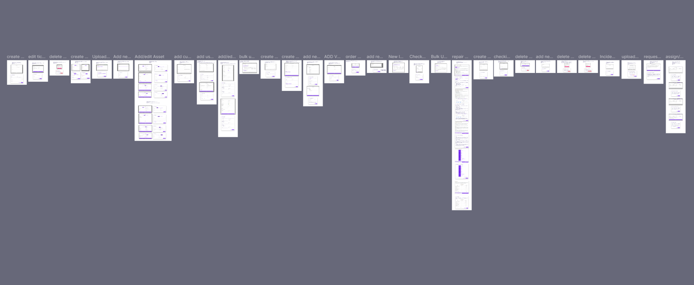
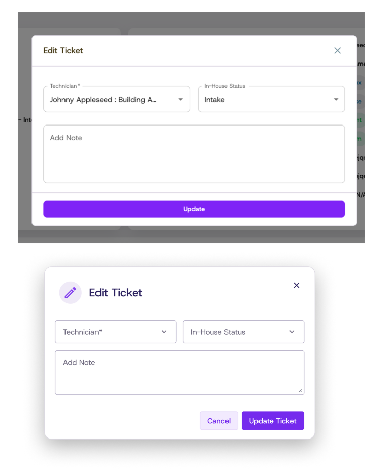
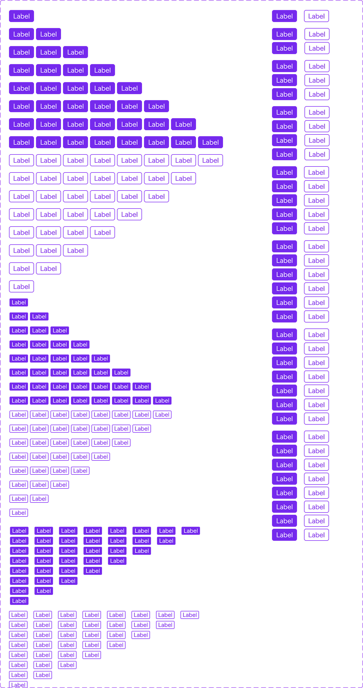
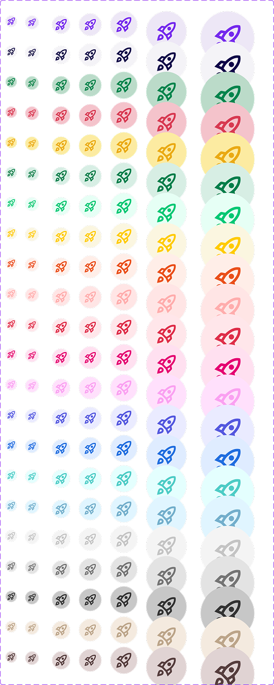

Context
I joined Vivacity Tech PBC (EdTech) as a Product Design Intern, joining a supervisor and junior duo. I contributed to Dream 3.0, its education asset (Chromebooks) management system. My workflow consisted of completing Jira tickets by creating and maintaining the design system's assets in Figma. My key deliverables were the 30+ modals that I redesigned — several of them multi-step flows — and the creation and maintenance of 5+ components within the design system. The components I built are still actively used by the design team today and the modals are still in development.
FileUploadBlock
The FileUploadBlock is my favorite thing I built at Vivacity, and rebuilding it for this site is where I noticed something. In the original, the "uploading" stage showed "4/4 Files" the whole time — before a single file had actually finished uploading. Recreating it here for the demo, I realized I'd rather it count up honestly, 1/4 then 2/4 as each file completes, than look finished before it is. So that's how I built it this time. It's a minor change, and one I made for myself, but it's the kind of detail I now can't unsee with a fresh pair of eyes.
Some other changes I made between versions: on the Uploaded state I added a running count ("Uploaded — N File(s)") so users can see how many files finished uploading, matching the count the Uploading state already shows. I also switched "files" to "File(s)" throughout, so the labels stay grammatically correct when someone uploads just one file. I also dropped the dashes in the border as I could not get the CSS just right when making the demo below.
I was tasked with this component near the end of my internship. I built it from two base components I made first, what I call the "Percent Bar" and the "File Uploader." I then composed the upload button, the uploading state, and the modified uploaded state on top of them, with the drag-and-drop added last. I enjoyed it enough that I rebuilt the whole thing a second time inside my own design system; it was one of the first components where I felt genuinely comfortable in Figma and in Vivacity's system.
Try it out! This is an interactive demo. Nothing you drop or select is uploaded or saved; the files never leave your browser.
Drag and drop a file here or click to upload
Accepted file types: .png, .jpg, .pdf
Uploaded
Uploading
Modal System Redesign
My main project and deliverable from my time at Vivacity was redesigning the modals throughout the product. My understanding was that the team had just updated its design system, so my part was implementing it. I started by auditing the product to catalogue the modals. From there, I started the work slow and small before taking on more at a faster rate. As I progressed some were redesigned quickly while others had multiple workflows or steps. By the time I finished, I had over 30 modals.


Components
Beyond the FileUploadBlock, I built and maintained a handful of reusable components for Dream, each with a full range of variants so the design team could drop them in without detaching. Two that I want to highlight are: LabelGroup, which packs one to eight labels into table and detail-card contexts, and IconCircle, which wraps an icon in a semantic color badge so status reads at a glance.
"One that has saved me a lot of time is the LabelGroup component you made. It is so handy to have that in table and detail card components so I don't have to detach just to add more labels."
— Kayla Marcus, Junior UI/UX Designer at Vivacity Tech PBC, on the LabelGroup component


Takeaways
Working on the design team at Vivacity gave me experience in contributing to and working within a system rather than building from scratch on my own. Every component decision had to respect what already existed: the colors, the patterns, the conventions. That constraint is actually what makes design systems consistent and worth keeping around.
More than anything, this internship clarified what I want to do next. I'm good at implementing inside a system, but this internship also showed me I'm happier when I'm closer to the problem, where it gets found rather than handed to me. That's the part of the Math Center Kiosk project I loved most: I noticed the problem myself, then designed the solution. That's what draws me toward product management.